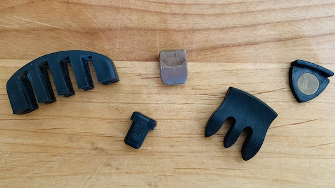
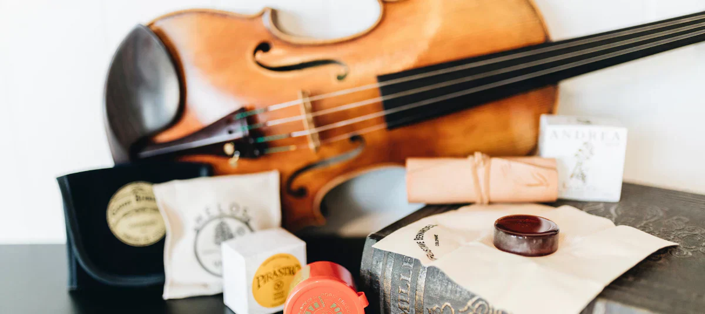

Don't know how to choose accessories for your violin?
Here we are! Helping you to choose the perfect accessories that fits your violin!
Strings

Choosing the right strings depends on your playing style and sound preference. Steel strings give a bright, focused sound, while synthetic or gut strings give a warmer, richer tone. Consider durability and ease of play too.
A violin mute is a small accessory that reduces the instrument’s volume by softening vibrations on the bridge.
It’s useful for quiet practice or creating a mellow tone in performances.
Rubber and silicone mutes are light and easy to clip on, giving a gentle reduction in sound.
Metal or heavier practice mutes make the violin much quieter but may slightly change the tone color.
Choose one based on when and where you play.
Click image to see more information→
Mute
Rosin
Rosin helps the bow grip the strings. Light rosin is ideal for warm, smooth tones, while dark rosin gives more grip and produces a louder, sharper sound. Match rosin type to your strings and climate.
When choosing your rosin, consider your playing style and environment. If you play indoors or prefer a clean, clear sound, choose light or amber rosin. For outdoor or cooler conditions, darker rosin provides stronger friction and better control.
Some rosins are made for specific string types — steel strings work best with firmer rosins, while synthetic or gut strings pair well with softer ones. Keep your rosin clean and apply it evenly to avoid harsh or dusty tone.
←Click image to see more information
A shoulder rest helps you hold the violin comfortably and improves posture. It supports the instrument between your shoulder and chin, reducing tension and preventing the violin from slipping.
There are many types to choose from — adjustable rests let you change height and angle, making them suitable for different shoulder shapes. Foam or padded rests are lighter and softer, great for younger players or those who prefer minimal pressure.
When choosing, think about your playing comfort and violin size. A good shoulder rest should feel stable but not tight, letting your hands move freely while keeping your neck relaxed.
Click image to see more information→
Shoudler rest